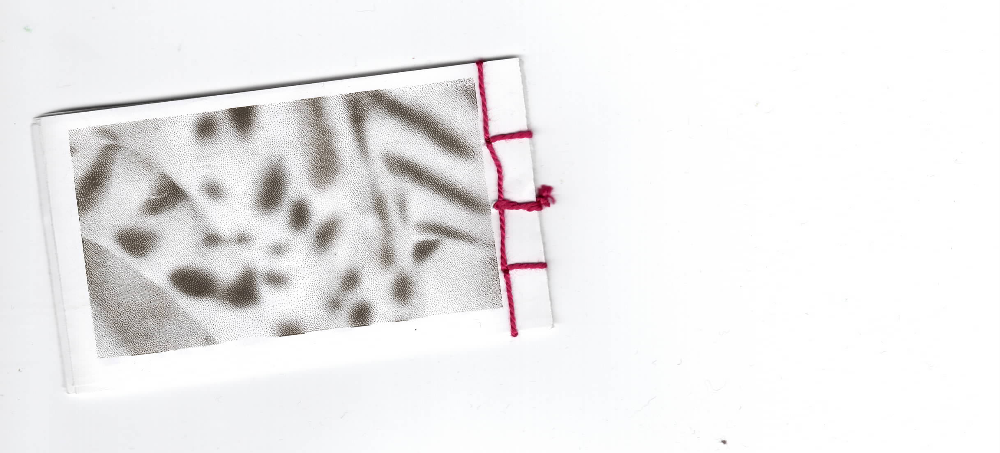
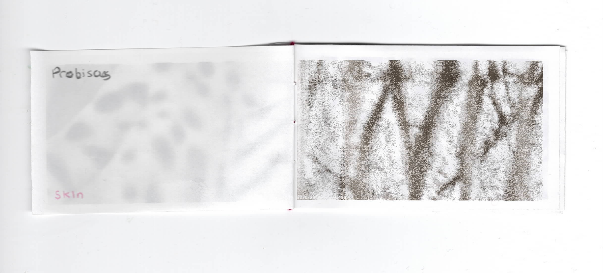
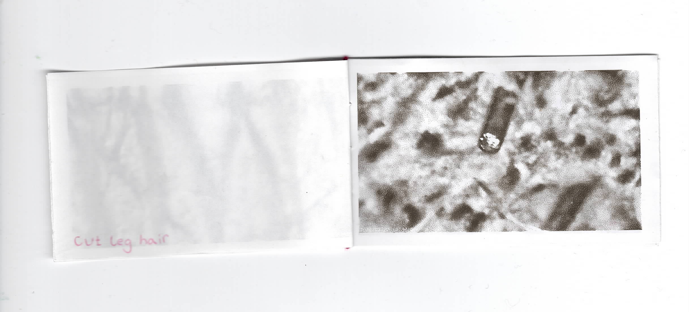
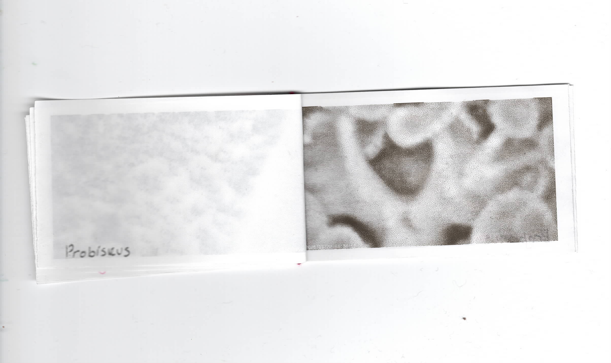
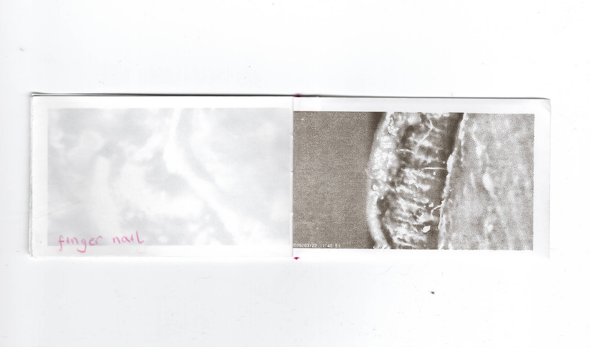
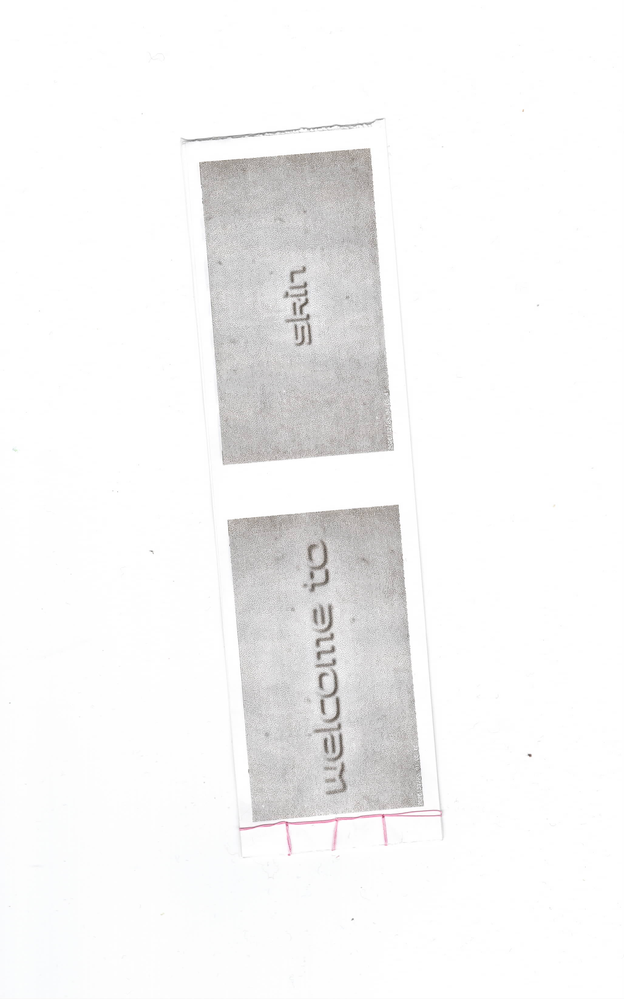
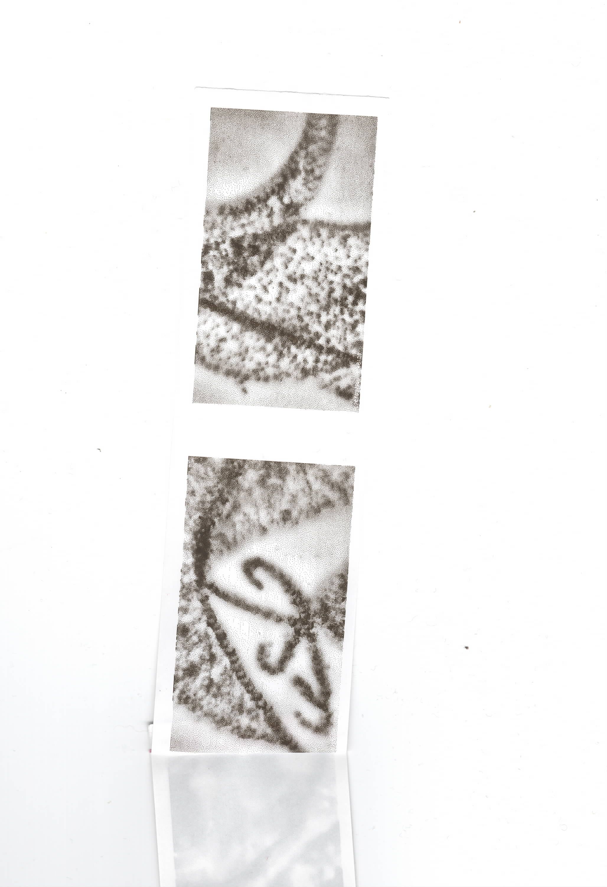
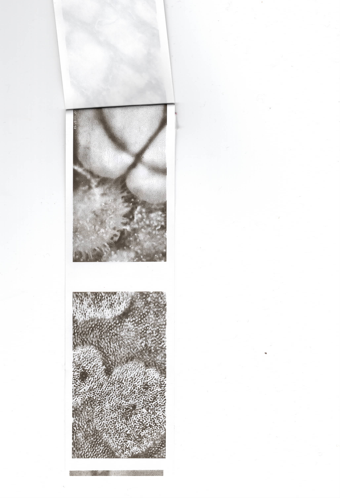

Skin Collection
Selected pages from two different zine formats exploring the barriers of skin, belonging to both plant and human. Textures captured with a microscopic camera are printed onto receipt paper and bound using the Japanese book binding technique.
This project started as a personal inquiry into the physical body and my surroundings at a surreal level of intimacy. Tattooed skin becomes indistinguishable from plant cell walls, and flower proboscis stand next to pubic hairs. I took inspiration from the way Suzanne Triester overcame technological limitations when she was unable to print out her digital recreations of game play screens at a high enough resolution in the 1980s, which resulted in her taking analog photographs of the computer screens to print them out on film. Similarly, I pointed my receipt camera at the screen that the endoscopic camera displays onto to print directly onto paper in black and white.








